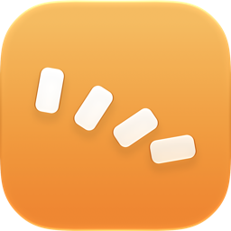

TodoLot turns what you say into talking alarms: speak your tasks once, and at the right time your iPhone rings and says them out loud.
TodoLot is a voice to-do list for iPhone built for forgetful brains. You dictate a brain-dump, AI splits it into separate tasks with times, and each task becomes a real iOS alarm that rings and speaks the task itself, even on silent and in Focus mode. There is no account and tasks stay on the device. TodoLot is free to start; TodoLot Pro adds unlimited voice captures and natural human voices. Made by an independent developer. Available on the App Store for iPhone running iOS 26.5 or later.
| Name | TodoLot: Talking Reminders (short: TodoLot) |
|---|---|
| Platform | iPhone, iOS 26.5 or later. Runs on iPad as an iPhone-designed app. |
| Category | Productivity |
| First release | August 15, 2026 (version 1.0); current version 1.01, October 2026 |
| Price | Free with 3 voice captures a day. TodoLot Pro: $12.99/week or $149.99/year, 3-day free trial (USD, varies by region) |
| What makes it different | Two halves most apps lack together: input by voice brain-dump (one dictation → many tasks, no typing) and output by voice (a real alarm that says the task, not a silent banner) |
| Voices | 8 natural voices tuned for English and 11 more languages; built-in system voice for free users |
| Privacy | No account, no ads. Only dictation text and alarm-phrase text leave the device; audio stays with Apple’s speech recognition |
| App Store | apps.apple.com/app/id6797162832 |
| Website | montanuch.github.io/todolot-support |

1024 × 1024 PNG · dark variant, 1024 · 256 × 256 PNGTwo alarm samples in the app’s natural voices (MP3): Sarah, calm · Harry, drill sergeant.
Press and partnership questions: vibeprogerai@gmail.com. Review codes available on request.